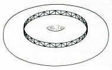
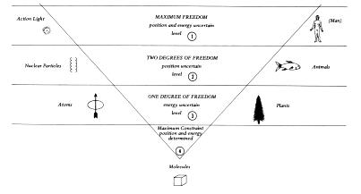
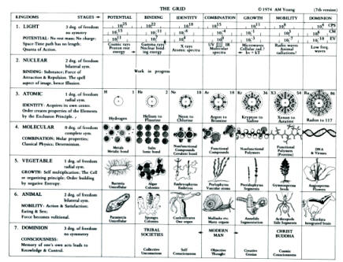

|
I feel fortunate that one of my mentors has been Arthur M. Young, an iconoclastic genius who invented the first, commercially licensed helicopter and later became a philosopher of cosmology and process theory.
Many thousands of lives have been saved as a result of his revolutionary invention. Yet, the helicopter was only a tangible by-product of Young's deeper, lifelong search for a philosophy that could integrate human consciousness with the physical, biological, and social sciences. This is a far bolder endeavor than the search for a grand unified field theory in physics. It is a project whose completion may well take many generations, perhaps even millenia. I believe that Arthur Young's models stand as landmarks along this great journey. Young's work cannot be considered a theory in the strict scientific sense. It is larger than a theory; it is a model of reality that goes beyond science. The potential value of such a worldview, paradigm or model for the scientific endeavor is heuristic: it suggests new avenues of inquiry. In this sense, Young's approach has been an inspiration to a generation of scholars working on the leading edge of conscioiusness exploration -- including Kenneth Pelletier, Stanislav Grof, Saul-Paul Sirag and Frank Barr. As an anchor point for understanding Young's cosmology, we can begin with the formula for the volume of the Einstein-Eddington Universe, the boundary region of what physicists call the hypersphere. It is 2p2r3. This is also the formula for the volume of a torus (donut) with an infinitely small hole. It is in the torus topology that Young sees a possible answer to the philosophical problem of the individual (or part, or microcosm) versus the collective (or whole, or macrocosm). in a toroidal universe, a part can be seemingly separate and yet connected with the rest. If we think of the fence in the diagram below as separating the inner from the outer, the torus provides a paradigm that permits us to see a monad as both separate from the rest of the universe by the fence-and still connected to everything else through the core. The core of the torus, with its infinitely small hole, is for Young a representation of inner consciousness.  Young points out that magnetic fields, vortices and tornados all have the toroidal form. The vortex is, in fact, the only manner in which a fluid can move on itself. Thus it is a very suitable shape for the universe to have. We must, however, bear in mind that the volume of the torus is three dimensional and is kin to the surface of the four-dimensional hypersphere of Einstein and Eddington. Suppose you had to draw a map on the surface of a torus so that all of the bordering countries would be distinguished by differences in color. On an ordinary surface, say a plane or sphere, such a map would require no more than four colors. The sphere (4/3pr3) to Young is analogous to structure in the universe. Later we shall show how a "cycle of action" divides the sphere from the torus which is, in Young's scheme, analogous to universal process. It requires seven different colors to create a map on the surface of a torus. Therefore, Young reasoned, there might be seven stages to process just as there is a fourfold division to structure. This inspiration is affirmed somewhat by ancient myths and cosmogonies. The Hindu, Zoroastrian, Japanese and Genesis creation myths all describe a seven-stage process. There are also seven rows to the periodic table of elements. Taking these cues, Young divided all of nature into seven stages of process or evolution. The diagram below illustrates the seven kingdoms of Young's "reflexive universe" arranged in an arc, on four levels according to their relative degrees of uncertainty:  This chart symbolizes the mythological descent of spirit into matter and the corresponding ascent of matter into spirit. The greatest amount of constraint and symmetry occurs in the molecules' crystalline structure. This kingdom is most subject to science's deterministic laws, and thus is most predictable. Both atoms and plants possess radial or two dimensional symmetry. They have two degrees of constraint and one degree of freedom, which constitutes their ability to store and release energy, within certain boundaries, without any specified prompting from without. Animals have bilateral symmetry along one dimension. Young believes that electrons and protons also possess symmetry along one dimension. The experiments of Lee and Yang, who discovered that chirality, or "handedness," characterizes nuclear particle reactions, suggests this possibility. Young points out that "handedness" requires bilateral symmetry. Heisenberg's principle states that we are uncertain of the position and the momentum of the nuclear particle. Young states that this principle applies to the animal as well. Thus both nuclear particles and animals possess one degree of constraint and two degrees of freedom. The first kingdom, which Young refers to as light (or action), and the seventh kingdom, of which humanity is a part, theoretically possess complete asymmetry and complete freedom. A photon released at a certain point could be anywhere within a radius of 186,000 miles a second later. Furthermore, since observation annihilates a photon, it cannot be predicted. Although light has no rest mass, when it is annihilated it can create electrons and protons which do have mass. It has no charge, yet the particles it creates do. In fact, for a pulse of light, time does not exist. Clocks stop at the speed of light. Thus mass, energy, and time are born when the photon condenses into a particle. This is the first step in the process that engenders the universe. Young regards action as the primary constituent of the universe, and other measures such as force (including gravity), energy and even time as derived parts of a whole which manifests as action. He also introduces the notion of purpose or intention into his scheme. The principle of least action is that light always follows the precise path that gets it to its destination in the shortest possible time. Planck himself observed that this principle expresses, "an explicitly teleological character." Thus the photons which constitute a ray of light behave like intelligent human beings: Out of all the possible curves they always select the one which will take them most quickly to their goal.Leibnitz, who discovered this principle, believed himself to have found evidence for an ubiquitous higher reason ruling all of nature. This characterization of light is the one exception to the excluion of purpose from science. Purpose, associated with the quantum of action, becomes the keynote of Arthur Young's theory. He draws on a rich, although often discarded, tradition in science and philosophy. ...as Whitehead pointed out in his Function of Reason: "Scientists, animated by the purpose of proving they are purposeless, constitute an interesting subject for study."Young points out that 2ph is the quantum of uncertainty. Thus we have a fundamental relationship between purpose and uncertainty, confirmed by the fact that h contains an angle, 2p, which according to Eddington (the physicist from whom Young derives the greatest inspiration), is a phase dimension. For Young, the 2p represents choice. Uncertainty then is not so much a limitation upon science as the positive introduction of purpose and choice and therefore free will. Essentially then, a light pulse is a piece of uncertainty, and it is possible to account for the chain of effects that it can produce. If it is of a high frequency, it can become a nuclear particle, a proton, or an electron. Some uncertainty will become mass (or certainty). Another step combines nuclear particles into atoms with a further loss of uncertainty, followed by still more at the molecular stage. Nevertheless there still remains enough uncertainty and choice of timing (phase dimension 2p) in certain large molecules, within narrow temperature ranges, to extract energy from the environment and build organizations that emerge as life. Referring to Young's "grid," one notices each of the seven kingdoms is divided into seven substages.  The turning point of the arc is the middle of the fourth substage of the molecular, or fourth, kingdom. The fifth substage of the molecular kingdom represents the non-functional (covalently bonded) polymers such as cellulose, celluloid, rayon, nylon, dacron, etc. Young maintains that the distinguishing properties of these polymers is that they grow, like cells, in chains or series of links. The growth of polymers reflects an ability to store order -- to drain energy from the environment. This is an example of negative entropy and a prelude to the living kingdoms which follow the turn of the arc. This turn marks the beginning of consciousness in Young's theory -- although clearly not anthropomorphic consciousness. The amount of indeterminacy here is very small indeed, but it is such that it enables the molecule to use the laws of determinism to build more complex structures and processes with even greater freedom. The 90ø turn in the arc is a change in direction that symbolizes this freedom. Thus the uncertainty which is unconscious on the left side of the arc achieves ever greater degrees of voluntary control on the right side of the arc. Selfcontrol, as such, is generally not recognized in classical physics. But, as was shown in the astrology section, Young assigned to it the measure formula T3, the third derivative of position which is equivalent to the rate of change in acceleration. A logically elegant feature in Young's scheme is the way basic characteristics of each of the seven kingdoms or stages (see the notated keywords on the grid) apply in an analagous fashion to the corresponding seven substages within each stage. Thus the chain polymers in the fifth substage of the molecular kingdom have the property of growth referred to above which is characteristic of the fifth or plant kingdom. Furthermore plants often consist of the polymers cellulose and lignin; so the fifth stage growth involves the fifth substage chemical. The ionic bonding in the second substage of the molecular kingdom is characterized by the binding potential of the sub-atomic particles of the second kingdom. And, in fact, these particles are actively involved in ionic bonding. A third example is the principle of mobility that manifests in the sixth substage of the molecular kingdom, via the stretching proteins -- actin and myosm, as well as in the sixth kingdom of animals. Actin and myosin are involved in the muscular movements of animals. Numerous examples are evident throughout the grid. One of the major characteristics of the fifth substage of the animal kingdom is a hierarchical series of organs from the head to the tail, through a segmented structure. The earthworm is a typical example. This segmented organization occurs in the fifth substage of the molecular and plant kingdoms as well. In the sixth substages of these kingdoms, the structural property involves side chains attached to the main segmented structure. This is evidenced in protein amino and side chains, the branches of gymnosperms, and the jointed feelers and antennae of arthropods. While recognizing the importance of DNA
genetic material in the organization of intercellular structure, Young
shares the doubt previously expressed that the DNA code can account for
the hierarchy and diversity of organs. Furthermore he thinks animal instinct
cannot be explained by DNA. To account for this type of extra-cellular
organization, he postulates an organizing field. Young suggests that the
corresponding organizing principle in the fifth substage of human beings
(genus) is related to the awakened kundalini concept of the yogis.
References . In fact, Beyond Science, is the name of a television series, produced by Arthur Bloch, based on the work of Arthur Young. . Action has the measure formula Mass x Length2/Time and is always an integral multiple of h, Planck's constant (in MKS units, 6.63 x 10-34 Joule-seconds). The smallest whole unit of action is equivalent to h, which is the quantum. While energy is proportional to frequency, action is a constant of the proportion between energy and frequency (E=hv) and comes in wholes. Gravity, the strong force, and the weak force can all be expressed in terms of action. . Max Planck, Scientific Autobiography and Other Papers, trans by Frank Gaynor. New York: Philosophical Library, 1949, p. 178. Quoted by Arthur Young in The Reflexive Universe, New York: Delacorte, 1975. . Alfred North Whitehead, The Function of Reason. Princeton, NJ: Princeton University Press, 1929. Quoted by Arthur Young in The Reflexive Universe. . Arthur M. Young, The Reflexive Universe. |